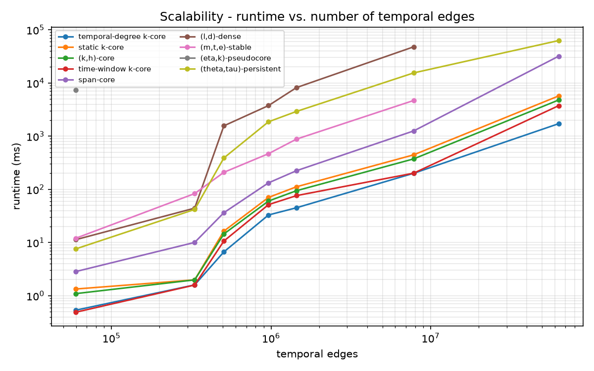
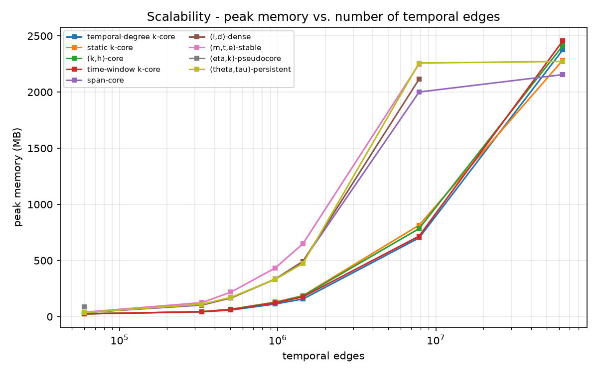
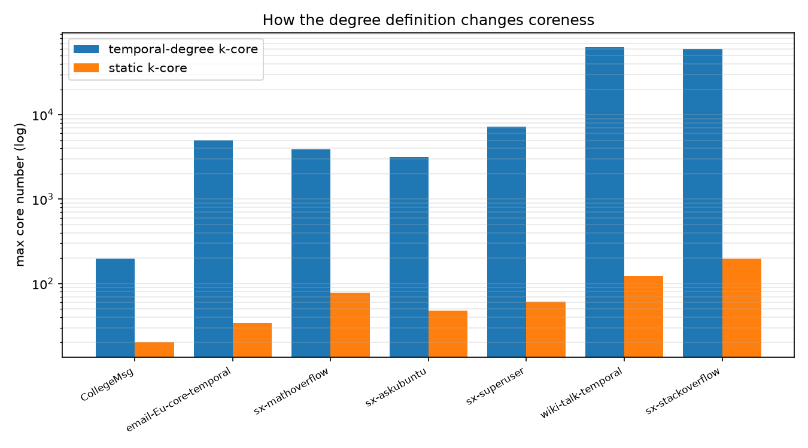
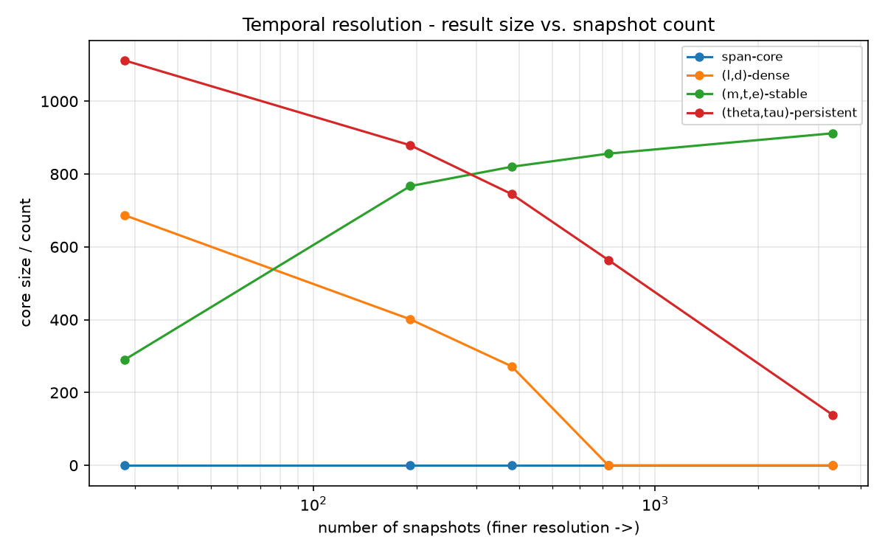

Temporal networks record when interactions happen. A temporal k-core extracts dense, persistent groups from such data, but many competing definitions exist and their behaviour on large, real datasets is poorly understood. This project implements nine temporal core algorithms and benchmarks their runtime, memory, scalability, and sensitivity to time resolution.
Each algorithm is implemented in C++ from its source paper, exposed to Python via pybind11, and validated against an independent reference on thousands of random graphs.
temporal-degree k-corestatic k-core(k,h)-coretime-window k-corespan-core(l,d)-dense(m,t,e)-stable(eta,k)-pseudocore(theta,tau)-persistentBenchmarks run each algorithm in an isolated process with peak-memory measurement and a 300 s timeout, on real SNAP datasets from ~60K to ~63M temporal edges.


Eight of nine algorithms scale to millions of edges in seconds with near-linear memory. The recursive (eta,k)-pseudocore does not scale - it times out beyond ~300K edges, matching the need for a streaming implementation noted in the literature.

Counting repeated interactions (temporal degree) versus distinct partners (static) yields wildly different coreness - e.g. 62,900 vs. 124 on wiki-talk. The gap reflects edge multiplicity from hyper-active accounts, a concrete example of how the choice of definition dominates the structural insight.

Binning granularity changes both cost and result: finer bins produce more snapshots, more compute, and sparser cores; coarser bins reveal larger bursts. Different models react in different directions (dense grows, stable shrinks) - echoing the classic time-granularity trade-off.